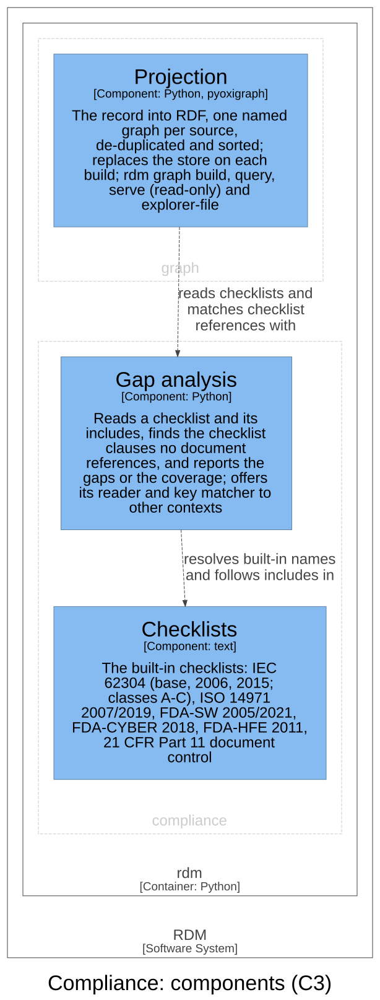

Compliance — Software Design¶
Id: SDS-GAP-001 · Kind: design · Context: compliance · References: DC-001 · Download as PDF
Design inputs¶
- DI-10 — RDM shall report the checklist references (keys) absent from a set of documents, exiting non-zero when any required reference is missing or nothing could be checked, warning of a document that still holds a placeholder, and ending quietly when its reader stops.
- Traces to: UN-006
- DI-11 — RDM shall ship composable built-in checklists for the applicable standards (IEC 62304, ISO 14971, FDA-SW/CYBER/HFE), each with clauses under unique keys, resolving
includedirectives between them by built-in name.- Traces to: UN-006
- DI-12 — RDM shall report coverage of documents against a checklist (total / missing / covered / percent), listing the missing items in verbose mode, and exiting as the gap report does.
- Traces to: UN-006
- DI-25 — RDM shall ship a built-in 21 CFR Part 11 document-control checklist, and RDM's own document-control statement (git as the document control system for this repository) shall pass gap analysis against it.
- Traces to: UN-006
Purpose¶
Compliance holds standards as checklists and checks the controlled documents
against them. A checklist is a selection of a standard's clauses, in a
plain-text file, that may include other checklists; a checklist clause is
one line of it, named by its key; a controlled document references a clause
by writing its key inside a [[ … ]] block, such as [[62304:5.1.2]]. A
gap is a checklist clause that no document in the set references, and
coverage is the share of a checklist's clauses that are referenced. Gap
analysis is the activity this context performs (rdm gap); the context
itself is named for its domain, compliance with a standard. It knows nothing
of design inputs, tests or risks: its only inputs are checklists and
documents.
Design Outputs¶
The design outputs are this context's architecture, in the C4 model of the architecture workspace: its two components, what each is responsible for, and how they relate. They name components, never source code: the workspace maps each component to its code.

| Component | Responsibility | Meets |
|---|---|---|
| Gap analysis | Reads a checklist and its includes, finds the clauses no document references, and reports the gaps or the coverage | DI-10, DI-11, DI-12 |
| Checklists | The built-in checklists, each resolvable by name | DI-11, DI-25 |
Gap analysis reads a checklist, named either as a built-in or as a file, and the documents to check, and applies these rules:
- Reading a checklist. A line's first word is its clause key and the rest
its description; a line starting with
#is a comment; a lineinclude <name>names a built-in checklist or a file relative to the including one. Each file is read once, told apart by its resolved path, so an include cycle ends and no file is counted twice. A byte-order mark is not part of the first key. A bareinclude, or a checklist or document that cannot be read, is an error naming it (exit 2). - Matching a reference. Only text inside
[[ … ]]blocks counts; a bare mention of a key elsewhere is not a reference. A block never runs past a blank line, so a stray[[does not turn the next paragraphs' mentions into references. Each built-in checklist's keys are unique. A key matches only at key-alphabet boundaries, so a shorter key is never satisfied by a longer sibling (X-1insideX-12) and a colon-qualified key never satisfies its prefix (FDA-SWinsideFDA-SW:sdmp). Two allowances are deliberate: a dotted descendant covers its parent ([[62304:5.6.2.a]]references62304:5.6.2), and a key may carry an annotation after a colon and a space ([[FDA-SW:sdmp: pointer note]], the idiom the templates of a new project use). - Reporting gaps (DI-10). The missing clauses are printed in checklist
format, so the report can itself be used as a checklist, sorted in
section order (
62304:5.1.2before62304:5.1.11), since includes would otherwise scramble the standard's order. The exit status is 3 when any clause is missing, 0 when none is, 1 when no checklist is given, and 2 when the checklist has no clauses: nothing was checked. A document that still holds a placeholder marker is named in a warning, since its references may describe nothing yet. - Reporting coverage (DI-12). For one or more checklists, one table row each (total, missing, covered, percent) and an overall row; in verbose mode, each checklist's missing clauses, the first ten and a count of the rest. It exits as the audit does: 3 when any clause is missing, 2 for a checklist with no clauses or none at all.
- Listing (DI-11, DI-25). The built-in checklists are listed by name.
Checklists holds seventeen built-in checklists (DI-11): IEC 62304 base lists for classes A, B and C, each including the class below, and the 2006 and 2015 editions of each class, each including that edition's class below and the class's base list; ISO 14971 2007 and 2019; FDA-SW 2005 and 2021 (basic, and enhanced including basic); FDA-CYBER 2018; FDA-HFE 2011; and the 21 CFR Part 11 document-control checklist (DI-25).
Gap analysis resolves built-in names and follows includes in the Checklists. The view also shows the knowledge graph's Projection, which reads checklists and matches checklist references with Gap analysis: it uses the same reading and matching rules, so the graph's clauses and reference links cannot drift from what gap analysis reports. No component of this context uses another context's.
DC-001 is RDM's own document-control statement: git and GitHub as this repository's document control system, each Part 11 clause cited inline. It is a controlled document, not a component; DI-25's test audits it against the built-in Part 11 checklist.
This context realises no other context's input, and no other context realises part of its inputs. The knowledge graph's DI-37 and DI-48 reuse its reading and matching rules; they are the graph's inputs, not parts of these.
Assumptions and open questions:
- The ISO 14971 2019 checklist lists the standard's clauses by number and a short mnemonic title, as the other built-ins do (Design Review 60).
- Verbose coverage names at most ten missing clauses per checklist and counts the rest; the gap report names them all.
Commands and events¶
Each row: the actor issues the command, resulting in its success event or a fail event (the rule broken, after the slash), which affects the entity.
| Actor | Command | Success event | Fail events | Entity |
|---|---|---|---|---|
| Contributor or auditor | Analyse gaps | Checklist Covered | Clauses Missing | Checklist |
Dependencies¶
Compliance is a leaf, at layer 1 of the dependency rule beside risk and architecture: it depends on no other context, not even the specification, since it works on any documents, not on design inputs.
Two parts depend on it, both as the rule allows: the composition root, for
the rdm gap command, and the knowledge graph (layer 5), a read model above
it, for DI-37 and DI-48.